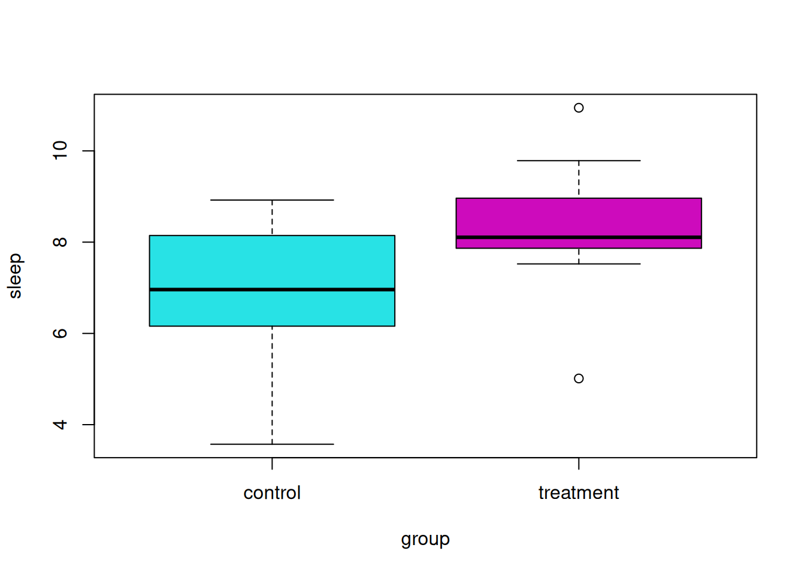
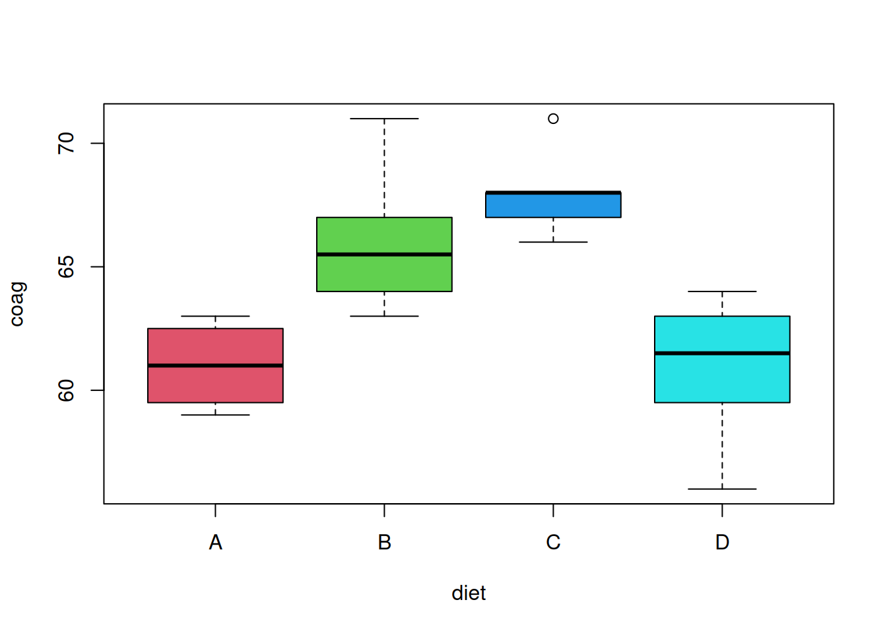

Important note for ST362: This chapter treats analysis of variance as a special case of the linear model. We fit models with categorical predictors and compare nested models using extra sums of squares.
“To find out what happens when you change something, it is necessary to change it.”
— Box, Hunter, and Hunter, Statistics for Experimenters (1978)
11.1 Categorical Predictors
So far, every predictor in our regression models has been numeric. A categorical predictor, also called a factor, takes values in a set of levels. The linear model can accommodate these predictors by creating dummy variables, one for each level other than a reference level. We covered the mechanics of dummy variables in the chapter on categorical predictors and interactions. Here we focus on what these models tell us about group means, and how they connect to the tests we already know.
11.2 Two-Sample t-Test
The simplest case is a factor with two levels, which splits the observations into two groups. Often, one level is considered the control, while the other is the treatment.
Mathematically, we consider the model
\[
y_{ij} \sim N(\mu_i, \sigma^2)
\]
where \(i = 1, 2\) for the two groups and \(j = 1, 2, \ldots n_i\). Here \(n_i\) is the number of observations in group \(i\). So \(y_{13}\) would be the measurement for the third member of the first group.
This model makes a number of assumptions. Specifically,
The observations follow a normal distribution. The mean of each group is different.
Equal variance for each group.
Independence. This is believable if groups were randomly assigned.
The natural question to ask: Is there a difference between the two groups? The specific question we’ll answer: Are the means of the two groups different?
For the stated model and assuming the null hypothesis is true, the \(t\) test statistic would follow a \(t\) distribution with degrees of freedom \(n_1 + n_2 - 2\).
As an example, suppose we are interested in the effect of melatonin on sleep duration. A researcher obtains a random sample of 20 adult males. Of these subjects, 10 are randomly chosen for the control group, which will receive a placebo. The remaining 10 will be given 5mg of melatonin before bed. The sleep duration in hours of each subject is then measured. The researcher chooses a significance level of \(\alpha = 0.10\). Was sleep duration affected by the melatonin?
melatonin
sleep group
1 8.145150 control
2 7.522362 treatment
3 6.935754 control
4 8.959435 treatment
5 6.985122 control
6 8.072651 treatment
7 8.313826 control
8 8.086409 treatment
9 8.922108 control
10 8.124743 treatment
11 8.065844 control
12 10.943974 treatment
13 4.833367 control
14 7.865453 treatment
15 6.340014 control
16 8.963140 treatment
17 6.158896 control
18 5.012253 treatment
19 3.571440 control
20 9.784136 treatment
To do so in R, we use the t.test() function, with the var.equal argument set to TRUE.
t.test(sleep ~ group, data = melatonin, var.equal =TRUE)
Two Sample t-test
data: sleep by group
t = -2.0854, df = 18, p-value = 0.05154
alternative hypothesis: true difference in means between group control and group treatment is not equal to 0
95 percent confidence interval:
-3.02378261 0.01117547
sample estimates:
mean in group control mean in group treatment
6.827152 8.333456
At a significance level of \(\alpha = 0.10\), we reject the null hypothesis. It seems that the melatonin had a statistically significant effect. Be aware that statistical significance is not always the same as scientific or practical significance. To determine practical significance, we need to investigate the effect size in the context of the situation. Here the effect size is the difference of the sample means.
t.test(sleep ~ group, data = melatonin, var.equal =TRUE)$estimate
mean in group control mean in group treatment
6.827152 8.333456
Here we see that the subjects in the melatonin group sleep an average of about 1.5 hours longer than the control group. An hour and a half of sleep is certainly important!
With a big enough sample size, we could make an effect size of say, four minutes statistically significant. Is it worth taking a pill every night to get an extra four minutes of sleep? (Probably not.)
boxplot(sleep ~ group, data = melatonin, col =5:6)

Note that, with var.equal = TRUE, this is actually a special case of regression with a categorical predictor:
summary(lm(sleep ~ group, data = melatonin))
Call:
lm(formula = sleep ~ group, data = melatonin)
Residuals:
Min 1Q Median 3Q Max
-3.3212 -0.5324 -0.0501 1.2585 2.6105
Coefficients:
Estimate Std. Error t value Pr(>|t|)
(Intercept) 6.8272 0.5107 13.367 8.72e-11 ***
grouptreatment 1.5063 0.7223 2.085 0.0515 .
---
Signif. codes: 0 '***' 0.001 '**' 0.01 '*' 0.05 '.' 0.1 ' ' 1
Residual standard error: 1.615 on 18 degrees of freedom
Multiple R-squared: 0.1946, Adjusted R-squared: 0.1499
F-statistic: 4.349 on 1 and 18 DF, p-value: 0.05154
Notice how groupTreatment has the exact same p-value as the one found in the two-sample t-test!
The parameter estimates are identical as well!
The coefficient groupTreatment is the difference in group means, \(\mu_T - \mu_C\). The intercept is the mean of the reference level, control. Changing the reference level changes the parameterization, but not the fitted means or the test.
11.3 One-Way ANOVA as a Linear Model
What if there are more than two groups?
library(faraway)names(coagulation)
[1] "coag" "diet"
plot(coag ~ diet, data = coagulation, col =2:5)

Consider the model:
\[
y_{ij} = \mu + \alpha_i + e_{ij}
\]
where
\[
\sum_{i=1}^{g} \alpha_i = 0
\]
Why do we make this assumption? With this assumption, we get a global mean \(\mu\) that is the mean of the data regardless of group, then the estimated \(\alpha_i\)s are each groups deviations from the global mean. The sum-to-zero ensures that the deviations are balanced from the global means; if they didn’t sum to zero, then the mean of the deviations would not result in the global means!
We make the usual assumptions about the errors in linear regression:
\[
e_{ij} \sim N(0,\sigma^{2}).
\]
Here,
\(i = 1, 2, \ldots g\) where \(g\) is the number of groups.
\(j = 1, 2, \ldots n_i\) where \(n_i\) is the number of observations in group \(i\).
Then the total sample size is
\[
N = \sum_{i = 1}^{g} n_i
\]
Observations from group \(i\) follow a normal distribution
\[
y_{ij} \sim N(\mu_i,\sigma^{2})
\]
where the mean of each group is given by
\[
\mu_i = \mu + \alpha_i.
\]
Here \(\alpha_i\) measures the effect of group \(i\). It is the difference between the overall mean and the mean of group \(i\).
Essentially, the assumptions here are the same as the two-sample case, however now, we simply have more groups.
We would again like to test if the means of the groups are equal.
\[
H_0: \mu_1 = \mu_2 = \ldots \mu_g \quad \text{vs} \quad H_1: \text{ Not all } \mu_i \text{ are equal.}
\]
Notice that the alternative simply indicates that some of the means are not equal, not specifically which are not equal.
Alternatively, we could write
\[
H_0: \alpha_1 = \alpha_2 = \ldots = \alpha_g = 0 \quad \text{vs} \quad H_1: \text{ Not all } \alpha_i \text{ are } 0.
\]
In the linear model, the \(g\) group means are fit with \(g\) coefficients. There are two equivalent ways to write this. We can use an intercept with \(g - 1\) dummy variables, or we can drop the intercept and use one dummy variable for every group. The fitted means are identical in both cases. The coefficients in R for a factor are differences from the reference level, but the fitted group means are the same no matter which level is the reference.
fit_ref <-lm(coag ~ diet, data = coagulation)fit_means <-lm(coag ~0+ diet, data = coagulation)coef(fit_ref)
In fit_ref, the intercept is the mean of the reference level, A. Each other coefficient is the difference between that group’s mean and the mean of A. For example, dietB is \(\bar y_B - \bar y_A = 66 - 61 = 5\). In fit_means, each coefficient is a group mean directly.
The dummy variables that R builds for the first model show this structure. Each row has a 1 in the columns for its group and 0 elsewhere.
The dietD coefficient in fit_ref is essentially zero. This is because the mean of diet D happens to equal the mean of diet A in this dataset, not because of anything general about the model.
Both models give the same fitted values, so the group means are the same.
We’ll leave out most of the details about how the estimation is done. The least squares estimates for this model are simple: they are the sample means of the groups.
\(\bar{y}_i\) is the sample mean of group \(i\).
\(\bar{y}\) is the overall sample mean.
Treatment and Sum-to-Zero Coding
The model we wrote with \(\alpha_i\) satisfying \(\sum_i \alpha_i = 0\) is not the one R fits by default. R uses treatment contrasts, which are the dummy variables in fit_ref. The model it fits is
where \(I(x_i = k)\) if observation \(i\) is from group \(k\), and \(0\) otherwise. The mean of group 1 is \(\beta_0\), and the mean of group \(k \geq 2\) is \(\beta_0 + \beta_k\). So \(\beta_0 = \mu_1\) and \(\beta_k = \mu_k - \mu_1\). The dummy for group 1 is left out because the intercept already accounts for it. Including all \(g\) dummies together with the intercept would make the columns of the design matrix linearly dependent.
Sum-to-zero is a different parameterization of the same \(g\) means. Write \(\mu_i = \mu + \alpha_i\) with \(\sum_i \alpha_i = 0\). Then the model is
where \(x^{*}_{ijk} = 1\) if observation \(j\) is from group \(k\), \(-1\) if it is from group \(g\), and \(0\) otherwise. This gives \(\mu_k = \mu + \alpha_k\) for \(k < g\), and \(\mu_g = \mu - \sum_{k<g} \alpha_k = \mu + \alpha_g\). Averaging the group means gives \(\mu = \frac{1}{g}\sum_i \mu_i\), so \(\mu\) is the unweighted average of the group means.
fit_sum <-lm(coag ~ diet, data = coagulation, contrasts =list(diet ="contr.sum"))coef(fit_sum)
Analysis of Variance Table
Response: coag
Df Sum Sq Mean Sq F value Pr(>F)
diet 3 228 76.0 13.571 4.658e-05 ***
Residuals 20 112 5.6
---
Signif. codes: 0 '***' 0.001 '**' 0.01 '*' 0.05 '.' 0.1 ' ' 1
anova(fit_sum)
Analysis of Variance Table
Response: coag
Df Sum Sq Mean Sq F value Pr(>F)
diet 3 228 76.0 13.571 4.658e-05 ***
Residuals 20 112 5.6
---
Signif. codes: 0 '***' 0.001 '**' 0.01 '*' 0.05 '.' 0.1 ' ' 1
The two codings differ in what the parameters mean, but not in the model they describe:
Same fit. Both give identical fitted values, residuals, sums of squares, and \(F\)-statistics. The null hypothesis that all group means are equal is the same statement under either coding (\(\beta_k = 0\) for all \(k \geq 2\), or \(\alpha_k = 0\) for all \(k\)), so the ANOVA table does not depend on the coding.
Different coefficients. Under treatment coding, \(\beta_k\) compares group \(k\) with the reference group. Under sum-to-zero coding, \(\alpha_k\) compares group \(k\) with the unweighted average of the group means. The \(t\)-test or confidence interval for an individual coefficient therefore answers a different question under each coding.
The intercept. Under treatment coding, the intercept is a group mean. Under sum-to-zero coding, it is the unweighted average of the group means. The sample mean \(\bar y\) weights each group by \(n_i\), so the two agree only when the design is balanced. Here the group sizes are 4, 6, 6, and 8, and the intercept happens to equal \(\bar y = 64\) anyway. This is a feature of this sample, not a general result.
The chapter’s \(\alpha_i\) notation corresponds to contr.sum. The code uses R’s default treatment coding, which is what lm() and aov() fit unless the contrasts are changed.
Sums of Squares from Nested Models
The ANOVA test is a comparison of two nested models. The null model has only an intercept, so every observation is predicted by the overall mean \(\bar y\). The group model has a separate mean for each group. The null model is nested within the group model.
We decompose the total variation, as we have seen in regression. The total variation measures how much the observations vary about the overall sample mean, ignoring the groups.
This is also the error sum of squares of the group model, where \(y_{ij}\) is an observation and \(\bar{y}_i\) is its fitted (predicted) value. The fitted values of the null model are all \(\bar y\), so the regression sum of squares of the null model is zero. The between-group sum of squares is therefore the extra sum of squares from moving from the null model to the group model: \(SSB = S_{\text{group}} - S_{\text{null}}\), where \(S\) denotes the regression sum of squares. We make this idea precise in the next section.
To develop the test statistic for ANOVA, we place this information into an ANOVA table.
Source
Sum of Squares
Degrees of Freedom
Mean Square
\(F\)
Between
SSB
\(g - 1\)
SSB / DFB
MSB / MSW
Within
SSW
\(N - g\)
SSW / DFW
Total
SST
\(N - 1\)
We reject the null (equal means) when the \(F\) statistic is large. This occurs when the variation between groups is large compared to the variation within groups. Under the null hypothesis, the distribution of the test statistic is \(F\) with degrees of freedom \(g - 1\) and \(N - g\).
11.4 Extra Sum of Squares
We now generalize the idea from the ANOVA table. Suppose model \(M_2\) is nested within model \(M_1\). That means \(M_1\) contains all of the predictors in \(M_2\), plus some additional ones. For example,
where \(\hat y_{i,k}\) is the fitted value from model \(k\). The extra sum of squares is the increase in the regression sum of squares from adding the extra predictors,
So the extra regression sum of squares is also the reduction in the error sum of squares. Adding predictors can only reduce the residual variation.
The Correction for the Mean Does Not Matter
R reports the corrected regression sum of squares, \(SS_{Reg}(\text{corrected}) = S - n\bar y^2\), which removes the intercept-only fit from \(S\). Let \(S_{1c}\) and \(S_{2c}\) be the corrected versions. Then
The correction cancels in the difference. This is why we can compute the extra sum of squares from R’s output, even though it reports the corrected values.
The F-Test
If we test whether the extra coefficients are zero, \(H_0: \beta_3 = 0\) in the example above, the test statistic is
\[
F = \frac{(S_1 - S_2) / (p - q)}{s_1^2} \sim F_{p - q, \; n - p}
\]
where \(p\) is the number of coefficients in \(M_1\), \(q\) is the number in \(M_2\), and \(s_1^2 = SSE_1 / (n - p)\) is the error variance (MSE) of the larger model. The degrees of freedom of the denominator come from the larger model, \(n - p\).
Using the notation of the ANOVA table, the one-way test is a special case. The group model is \(M_1\) with \(p = g\) coefficients, and the null model is \(M_2\) with \(q = 1\) coefficient. Then \(S_1 - S_2 = SSB\), \(p - q = g - 1\), and \(s_1^2 = MSW\). The F-statistic is exactly \(MSB / MSW\).
The general test works for any pair of nested models. It does not require a particular predictor to be tested, only a comparison of two nested fits.
11.5 Testing a Group of Predictors
Now consider the penguins data. Some of the predictors are measurements of the bill, and bill length and bill depth are likely to be correlated. Before testing anything, we remove the rows with missing values, which leaves 333 penguins.
We would like to know if the bill measurements are associated with body mass, after accounting for flipper length. We fit two nested models.
m1 <-lm(body_mass_g ~ flipper_length_mm + bill_length_mm + bill_depth_mm, data = peng)m2 <-lm(body_mass_g ~ flipper_length_mm, data = peng)
Here \(M_2\) is nested within \(M_1\). The null hypothesis is \(H_0: \beta_2 = \beta_3 = 0\), which says that neither bill measurement is associated with body mass once flipper length is in the model. The alternative is that at least one of them is not zero.
We could look at the individual p-values in summary(m1). However, because the two bill measurements are correlated, the marginal t-tests do not answer the joint question, and checking each one separately would require multiple tests. The extra sum of squares test checks the two coefficients together.
The extra sum of squares test is performed with anova() on the two fitted models.
anova(m2, m1)
Analysis of Variance Table
Model 1: body_mass_g ~ flipper_length_mm
Model 2: body_mass_g ~ flipper_length_mm + bill_length_mm + bill_depth_mm
Res.Df RSS Df Sum of Sq F Pr(>F)
1 331 51211963
2 329 50814912 2 397051 1.2853 0.2779
Here the F-statistic and p-value come from the formula above, with \(p - q = 2\) and \(n - p = 329\). The p-value is about \(0.28\). Using a significance level of \(\alpha = 0.05\), we do not reject the null hypothesis. The data do not provide evidence that either bill measurement is associated with body mass once flipper length is in the model. Failing to reject is not the same as showing the bill measurements have no effect, and a larger sample could detect a smaller association.
Categorical Predictors in Nested Models
A categorical predictor can be tested the same way. The species variable has three levels, so it adds two dummy variables. We compare the model with flipper length alone to the model with flipper length and species.
m3 <-lm(body_mass_g ~ flipper_length_mm, data = peng)m4 <-lm(body_mass_g ~ flipper_length_mm + species, data = peng)anova(m3, m4)
Analysis of Variance Table
Model 1: body_mass_g ~ flipper_length_mm
Model 2: body_mass_g ~ flipper_length_mm + species
Res.Df RSS Df Sum of Sq F Pr(>F)
1 331 51211963
2 329 45843144 2 5368818 19.265 1.225e-08 ***
---
Signif. codes: 0 '***' 0.001 '**' 0.01 '*' 0.05 '.' 0.1 ' ' 1
The numerator degrees of freedom is \(3 - 1 = 2\), the number of dummy variables. The test asks whether the three species have different means after accounting for flipper length. Note that the coefficients for flipper_length_mm may change between these two models, because the predictors are correlated. The coefficient is a different quantity in each model.
coef(m3)["flipper_length_mm"]
flipper_length_mm
50.15327
coef(m4)["flipper_length_mm"]
flipper_length_mm
40.60617
11.6 Example: Blood Coagulation
We’ll use the coagulation dataset from the faraway package. Here four different diets (A, B, C, D) were administered to a random sample of 24 animals. The subjects were randomly assigned to one of the four diets. For each, their blood coagulation time was measured in seconds.
Here we would like to test
\[
H_0: \mu_A = \mu_B = \mu_C = \mu_D
\]
where, for example, \(\mu_A\) is the mean blood coagulation time for an animal that ate diet A.
library(faraway)names(coagulation)
[1] "coag" "diet"
plot(coag ~ diet, data = coagulation, col =2:5)
The plot alone suggests a difference of means. We fit the null model and the group model, and compare them with the extra sum of squares test.
coag_null <-lm(coag ~1, data = coagulation)coag_group <-lm(coag ~ diet, data = coagulation)anova(coag_null, coag_group)
Analysis of Variance Table
Model 1: coag ~ 1
Model 2: coag ~ diet
Res.Df RSS Df Sum of Sq F Pr(>F)
1 23 340
2 20 112 3 228 13.571 4.658e-05 ***
---
Signif. codes: 0 '***' 0.001 '**' 0.01 '*' 0.05 '.' 0.1 ' ' 1
The F-statistic here is the same one the one-way ANOVA table gives. We can check this with aov(), which produces the ANOVA table directly.
coag_aov <-aov(coag ~ diet, data = coagulation)summary(coag_aov)
Df Sum Sq Mean Sq F value Pr(>F)
diet 3 228 76.0 13.57 4.66e-05 ***
Residuals 20 112 5.6
---
Signif. codes: 0 '***' 0.001 '**' 0.01 '*' 0.05 '.' 0.1 ' ' 1
Were we to run this experiment, we would have pre-specified a significance level. However, notice that the p-value of this test is incredibly low, so using any reasonable significance level we would reject the null hypothesis. Thus we believe the diets had an effect on blood coagulation time.
The fitted values of the group model are the sample means of each diet. We can confirm this by predicting on a data frame with one row per diet.
When fitting a model with a grouping variable in R, be sure the variable is a factor. If it is not, the model is a linear regression with the predictor treated as numeric, not a one-way ANOVA.